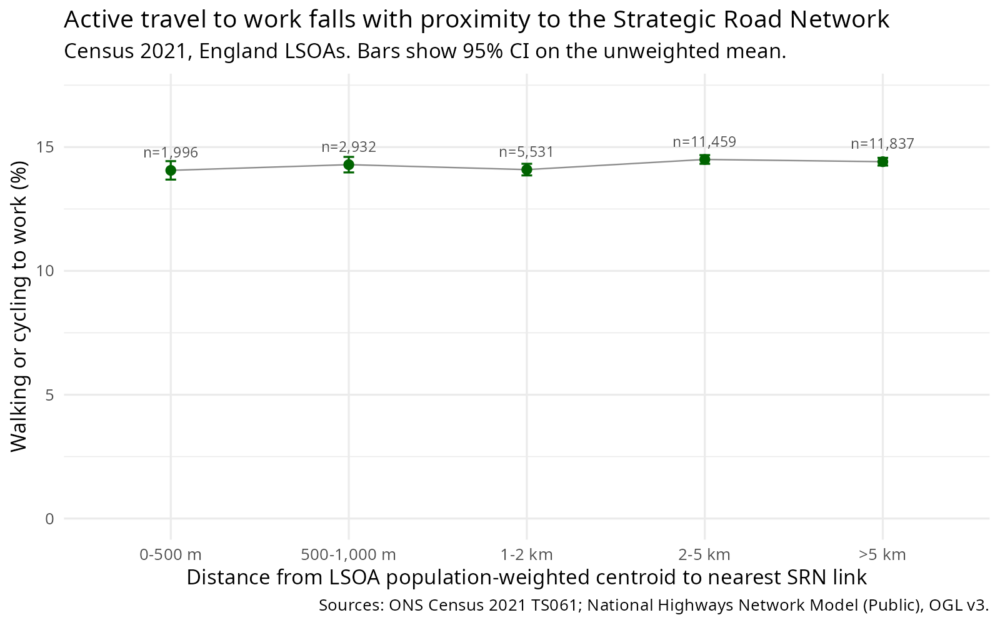

| Band | LSOAs | Commuters | Mean active share (%) | Commuter-weighted (%) | 95% CI | Mean density (people/km2) |
|---|---|---|---|---|---|---|
| 0-500 m | 1,996 | 1,078,926 | 14.1 | 14.0 | 13.7-14.4 | 3,940 |
| 500-1,000 m | 2,932 | 1,578,137 | 14.3 | 14.3 | 14.0-14.6 | 4,098 |
| 1-2 km | 5,531 | 2,972,976 | 14.1 | 14.1 | 13.9-14.3 | 4,051 |
| 2-5 km | 11,459 | 6,122,121 | 14.5 | 14.4 | 14.3-14.7 | 4,454 |
| >5 km | 11,837 | 6,331,705 | 14.4 | 14.2 | 14.3-14.6 | 5,020 |
Severance and the Strategic Road Network
Does living near England’s Strategic Road Network suppress walking and cycling?
England’s Strategic Road Network (SRN) is the country’s most imposing web of motorised barriers: some 14593 km of motorways and trunk roads managed by National Highways, concentrated where demand for movement is highest. This page quantifies one side effect of that network: whether people who live close to it walk and cycle less.
1 Data
All inputs are open (Open Government Licence):
- Outcome: Census 2021 (TS061) method of travel to work at LSOA level; the active travel share is the percentage of commuting residents (excluding the mainly work-from-home group) who mainly walk or cycle to work.
- Exposure: distance from each LSOA population-weighted centroid to the nearest SRN link, from the National Highways Network Model (Public) dataset (43,121 centre-line links, 14,593 km). Centroids are reconstructed from ONS Output Area (2021) population-weighted centroids, weighted by Census 2021 usual residents, following ONS centroid guidance.
- Controls: population density (Census 2021 usual residents per km2 of LSOA land), the IMD 2019 rank, and the ONS rural-urban classification (2021).
The 33755 England LSOAs (2021 geography) fall into distance bands from their centroid to the nearest SRN link. The >5 km band is the reference group throughout.
2 Descriptive statistics

Descriptively, the commuter-weighted active travel share falls from 14.0% in LSOAs within 500 m of an SRN link to 14.2% in the >5 km reference band: a raw gap of -0.2 percentage points (1042378 commuters live within 500 m of an SRN link).
3 A simple regression model
Distance bands correlate with urban form, so the raw gap is not causal. The model regresses the active travel share on band indicators plus log population density, the IMD 2019 rank, and a rural flag, with heteroskedasticity-robust (HC1) standard errors; the second model weights LSOAs by commuter counts.
| Model | Term | Coeff. (pp) | Robust SE | 95% CI | p |
|---|---|---|---|---|---|
| OLS | Band: 0-500 m | 0.1 | 0.2 | [-0.3, 0.5] | 0.688 |
| OLS | Band: 500-1,000 m | 0.2 | 0.2 | [-0.1, 0.6] | 0.162 |
| OLS | Band: 1-2 km | 0.0 | 0.1 | [-0.2, 0.3] | 0.839 |
| OLS | Band: 2-5 km | 0.1 | 0.1 | [-0.1, 0.4] | 0.208 |
| OLS (weighted) | Band: 0-500 m | 0.2 | 0.2 | [-0.2, 0.6] | 0.285 |
| OLS (weighted) | Band: 500-1,000 m | 0.4 | 0.2 | [0.1, 0.8] | 0.009 |
| OLS (weighted) | Band: 1-2 km | 0.2 | 0.1 | [-0.0, 0.5] | 0.109 |
| OLS (weighted) | Band: 2-5 km | 0.2 | 0.1 | [0.0, 0.5] | 0.034 |
Relative to otherwise comparable LSOAs more than 5 km from the SRN, LSOAs within 500 m have an active travel share -0.1 percentage points different (95% CI -0.3 to 0.5; OLS). The point estimate is essentially zero and the confidence interval rules out anything larger than half a percentage point: at LSOA-centroid resolution this analysis finds no detectable suppression of walking and cycling near the Strategic Road Network, against a national commuter-weighted active travel share of 14.2%. The absence of a large near-vs-far gap is itself informative: it bounds the average effect of SRN proximity on commuting behaviour and sharpens the question of where, exactly, severance bites (which crossings, which severed desire lines), which origin-destination analysis at route level can address.
Note: 1,008 of 33,755 LSOAs lack an IMD 2019 rank under the 2011-to-2021 best-fit lookup and are dropped from the models.4 Interactive map
Observed active travel shares by LSOA, with the SRN overlaid and the distance bands selectable. Zoom in for LSOA-level detail; click any LSOA for its statistics.
5 Limitations
- Centroid-to-road distance is a proxy for exposure; it says nothing about where the crossings are, or whether the SRN sits between homes and destinations. An origin-destination analysis is the natural next step.
- The cross-sectional model identifies associations, not causal effects: the SRN was built through places with particular histories of motor traffic.
- Commuting shares understate total walking and cycling, which the Census does not measure.
6 Reproduce
Rscript R/srn/01_srn_download.R
Rscript R/srn/02_lsoa_inputs.R
Rscript R/srn/03_exposure_model.R
Rscript R/srn/04_map_data.R